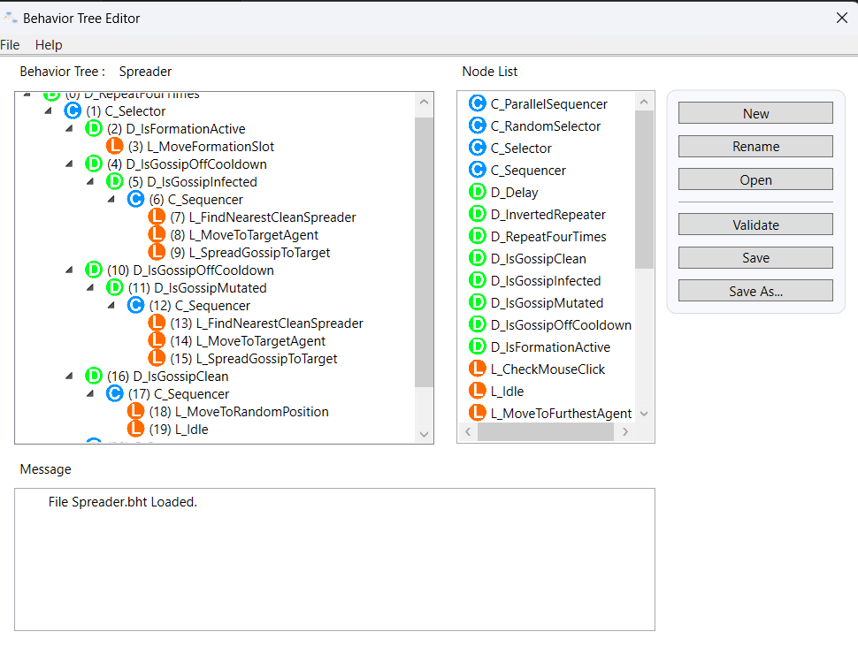
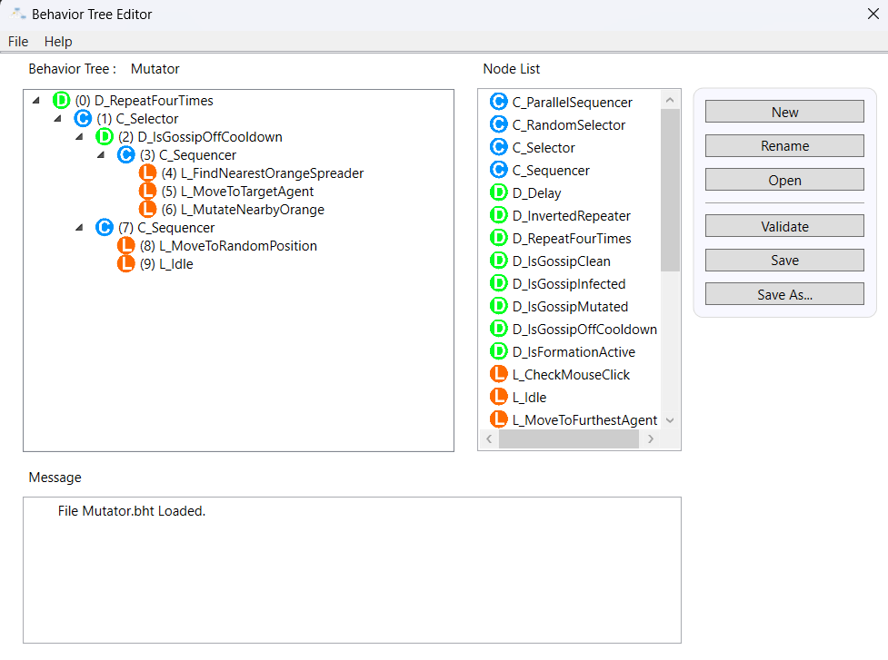
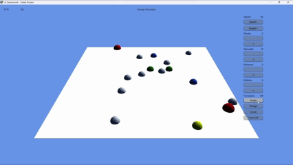

Gossip Simulator
Campus gossip as a spatial epidemic. Four behaviour trees, one contact rule, no scripted chase.
- Gossip sim — clean / orange / yellow state machine on spreaders; contact range 5.0, 0.5 s dual cooldown.
- Four roles — Starter, Spreader, Remover, Mutator; each with its own GUI-authored tree.
- Custom BT nodes — eight leaves and five decorators wired into the DigiPen framework.
- Formations (EC) — Single, Wedge, Circle; click terrain for a group goal.
- Live tuning — speed and population buttons while the sim runs.
- Not mine — Rabin Engine, BT runtime, BehaviorTreeEditor, sample nodes (DigiPen framework).
What we're testing
Whether a readable multi-agent social epidemic can come from behaviour trees + blackboard + contact rules — not from a cutscene, and not from a trust or reputation model. Gossip here is a three-state colour FSM that spreads when agents touch.
The asymmetric roles are the experiment. Starters only seed orange. Mutators alone escalate orange to yellow. Yellow then spreads from mutated spreaders. Removers pull everything back to white. If any of those permissions leak, the epidemic stops being legible as design and starts looking like random colour noise.
Solo week inside the DigiPen AI framework. I designed the scenario, wrote the gossip and formation systems in C++, authored the four trees in the BehaviorTreeEditor, and shipped a showcase video with the assignment.
Design intent
The trap is to write four scripts that walk toward each other and call it AI. Behaviour trees earn their keep when the same leaf vocabulary — find nearest, move, interact — produces different social jobs because the decorators and selectors change, not because each role has a private special-case function.
That is why infection, mutation, and cleanse share one contact API and one cooldown. The trees decide who to chase and when it is legal to act. The sim decides whether the touch counts. If those layers blur, every bug becomes a rewrite of both.
Roles
Default spawn is sixteen agents. Live UI can add or remove each role while the sim runs (spreaders floor at one).
| Role | Count | Colour | Job |
|---|---|---|---|
| Starter | 2 | Red | Seek clean spreaders; infect orange on contact |
| Spreader | 10 | White / orange / yellow | Carry state; orange and yellow seek clean and copy their own variant |
| Mutator | 2 | Green | Seek orange only; mutate to yellow |
| Remover | 2 | Blue | Seek orange or yellow; cleanse to white |
Contact rules
Center-to-center distance ≤ 5.0. Both agents must be off cooldown. A successful interact starts a 0.5 s cooldown on both. That dual gate is what keeps the epidemic from becoming a single-frame flash of every colour at once.
Removers taught the sharpest rule: cleanse whoever is actually in range, not only the chase target still sitting on the blackboard. Chasing one agent and touching another is common once the map densifies; if cleanse is bound to the chase ID, removers look broken even when the contact geometry is correct.
Trees and nodes
Four GUI-authored trees in the BehaviorTreeEditor — Starter, Spreader, Remover, Mutator. Spreader is the deep one (23 nodes, depth 5): formation first if active, else infected or mutated spread branches, else clean wander/idle.
| Custom leaves | Custom decorators |
|---|---|
L_FindNearestCleanSpreader, L_FindNearestInfectedOrMutatedSpreader, L_FindNearestOrangeSpreader, L_MoveToTargetAgent, L_SpreadGossipToTarget, L_CleanseGossip, L_MutateNearbyOrange, L_MoveFormationSlot |
D_IsGossipClean, D_IsGossipInfected, D_IsGossipMutated, D_IsGossipOffCooldown, D_IsFormationActive |
Blackboard keys hold GossipState, GossipCooldown, and TargetAgent so leaves stay small and the trees stay readable.


Formations (extra credit)
Optional group movement on top of the epidemic. UI toggles Single, Wedge, Circle, or Form Off. Left-click the terrain for a goal; the lowest-ID spreader is leader. Slot spacing 6.0; circle radius 8.0. While formation is active, that branch preempts gossip chase on spreaders — so you can watch the flock hold shape, then turn Form Off and watch the epidemic resume.
- Single — diagonal trailing slots (one grouped formation, not a single-file queue).
- Wedge — V rows alternating left / right behind the leader.
- Circle — ring around the click; leader to the center.

Outcome and reflection
Shipped as a one-week solo prototype that meets the node and tree requirements, plus the formation bonus. The showcase video is the proof pass; the readable colour epidemic is the design pass.
What worked: building the four trees in the BehaviorTreeEditor. Seeing selectors and decorators as a diagram made nesting less abstract than reading only C++. The blackboard kept target and state out of one giant leaf.
What hurt: editor depth and single-child composites failing Validate; registering every new node in Nodes.def and NodeHeaders.h; and the remover range-vs-chase bug until cleanse used the agent actually in contact. Formation slot overlap took a separate tuning pass after the gossip rules already worked.
If I rebuilt it, I would freeze the contact and state API first with debug logs on, then author trees against that contract — the same “system before scenery” lesson that shows up again on Project Xeno.
Role
- Scenario design — roles, colours, infection / mutate / cleanse rules
- Gossip simulation layer (
P1_Gossip) - Custom BT leaves and decorators; four authored trees
- Formation extra credit (
P1_Formation) and live tuning UI - Showcase video and post-mortem
Related Project Xeno — same trimester; multi-agent pressure with a different AI tool (metric-gated FSM vs behaviour trees).
Questions soniclinxin@gmail.com · LinkedIn